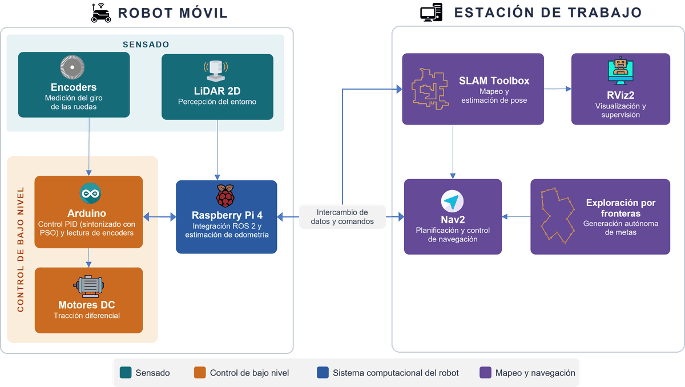
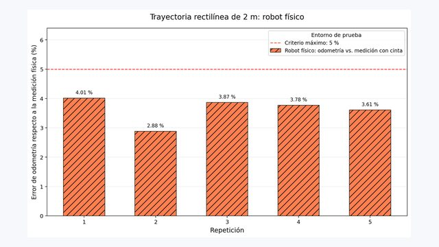
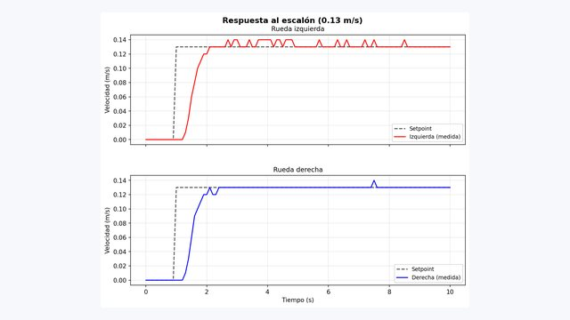
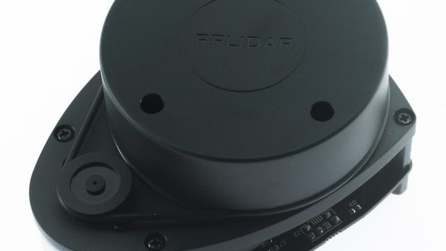
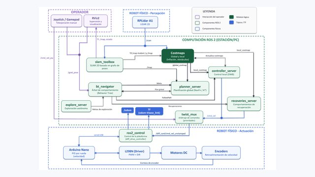
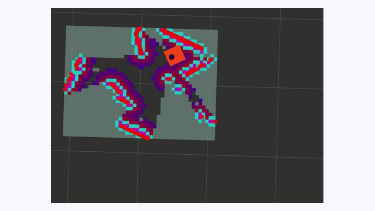
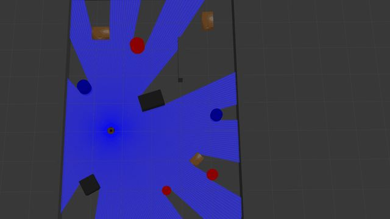

Minería · Chile · 2026
Mapear una mina sin exponer personas
En la mina El Teniente, un dron con LiDAR mapea en 3D espacios confinados y sin GPS. Ver el caso
Trabajo de titulación · Ingeniería Civil Electrónica · UTEM · 2026
Una guía abierta para entender cómo se construyó un robot de bajo costo que mapea, navega y explora interiores con ROS 2. Cada tema explica la idea, muestra la evidencia medida, cita sus fuentes y conecta con casos del mundo real.
Basada en la tesis Navegación y exploración autónoma de interiores utilizando un robot móvil de tracción diferencial, de Sebastián Valderas Neculqueo, con el profesor guía Patricio Galarce Acevedo.

3,50 m²de área libre mapeada en promedio
El prototipo en una corrida real
Nadie le indica a dónde ir. El robot mide con su láser, arma el mapa, elige el borde de lo desconocido más conveniente, planifica una ruta y avanza, hasta que no queda nada nuevo por descubrir.
Ejecución de demostración sobre el robot real. En RViz, el programa que muestra los datos del robot, la línea verde es la ruta planificada hacia la frontera elegida. El video se carga solo si lo reproduces.
La idea en cuatro pasos
Las ruedas se corrigen 30 veces por segundo y el destino se revisa cada 3,3 s.
Un láser gira y mide la distancia a las paredes en todas direcciones, en un plano horizontal.
Ver y mapear → EstimarCuenta cuánto giró cada rueda para saber cuánto avanzó, y corrige ese cálculo con el láser.
Moverse y medir → DecidirBusca los bordes entre lo conocido y lo desconocido, llamados fronteras, y elige uno como destino.
Explorar por fronteras → MoversePlanifica una ruta que evita obstáculos y pide a cada rueda la velocidad justa para seguirla.
Planificar rutas →Aquí se muestra una simulación del robot explorando. Necesita JavaScript.

La guía
Se pueden leer en orden o por separado.

Tracción diferencial, encoders y odometría, con los ensayos de recta y giro del robot real.

PID en tiempo discreto, la ley heredada que opera como PI y la sintonía con un enjambre de partículas.

Cómo mide el láser, qué no alcanza a ver y cómo se arma el mapa mientras se corrige la deriva.

Mapas de costos, A estrella, la ventana dinámica y las recuperaciones cuando algo sale mal.

Cómo decide el robot a dónde ir y por qué 53 de 54 metas abortadas no eran fallas.

El robot en Gazebo, qué se comprueba en simulación y qué solo en el robot real.
Resultados, con sus matices
Las cifras vienen de la tesis. También se dice qué no se alcanzó a medir.
La tasa de éxito al navegar hacia destinos fijos elegidos por una persona y la localización sobre un mapa guardado. La navegación funcionó de punta a punta durante la exploración, pero no tiene un indicador cuantitativo propio. Ver las limitaciones.
Fuera del laboratorio
Lo que hace este robot pequeño de interiores es lo que hacen máquinas que trabajan en minas, bodegas, hospitales y otros planetas. Cambian los sensores, el presupuesto y las exigencias de seguridad, no el razonamiento.
En la mina El Teniente, un dron con LiDAR mapea en 3D espacios confinados y sin GPS. Ver el caso
El equipo CERBERUS ganó el desafío subterráneo de DARPA con robots que exploraron y mapearon túneles por su cuenta. Ver el caso
El rover Perseverance replanifica su camino entre rocas con un mapa local que actualiza mientras avanza. Ver el caso
Más allá de esta tesis
Hay temas que el trabajo resuelve sin nombrarlos y que sirven en cualquier proyecto.
Rutas de lectura
Sobre este sitio
Hice este sitio para que el trabajo se pueda entender y repetir sin leer la tesis completa. Explica el trabajo en simple, muestra la evidencia junto con sus límites y deja el camino trazado para quien quiera repetirlo o mejorarlo.
Las cifras y figuras del robot vienen de la tesis y se citan con su sección o figura. Los casos del mundo real y las lecciones de ingeniería se apoyan en fuentes externas, listadas al final de cada página y reunidas en Recursos.